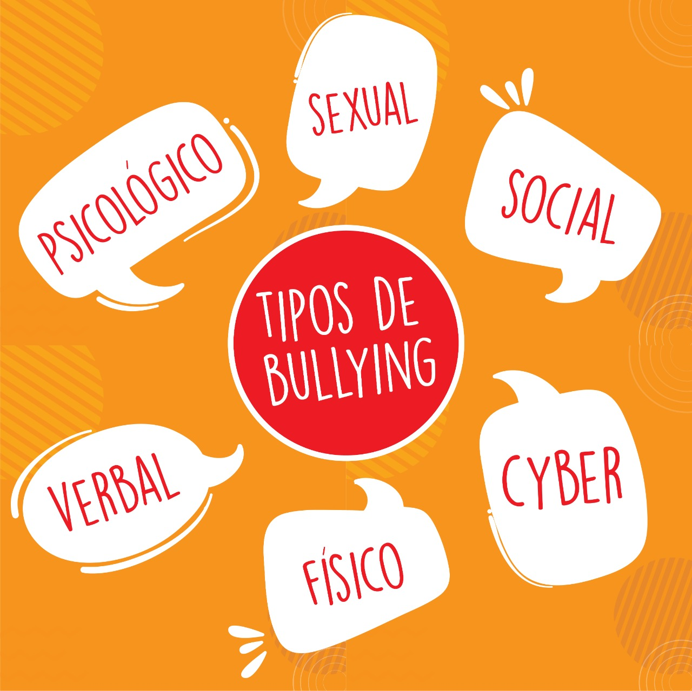
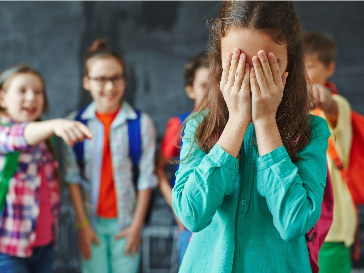

¿Qué es el Bullying?
El bullying es una forma de violencia entre estudiantes, donde una persona o grupo molesta, humilla o agrede a otra de manera intencional y repetida...
Características del Bullying
- Intencionalidad: El agresor quiere causar daño o malestar.
- Repetición: Las agresiones se repiten en el tiempo.
- Desequilibrio de poder: El agresor tiene más fuerza física, apoyo social o influencia que la víctima.
- Daño emocional o físico: Afecta negativamente a la víctima.
Formas en las que se presenta
- Físico: golpes, empujones, daño a pertenencias.
- Verbal: insultos, burlas, apodos ofensivos.
- Psicológico: intimidación, amenazas, chantaje.
- Social: aislamiento, exclusión, rumores.
- Digital o cibernético: a través de redes sociales o mensajes ofensivos.
¿Por qué ocurre el bullying?
Existen diversas razones por las cuales puede presentarse el bullying, como el deseo de controlar a otros, problemas familiares o falta de empatía.


Consecuencias del Bullying
En la víctima:
- Tristeza, ansiedad o miedo constante.
- Baja autoestima.
- Dificultad para concentrarse y aprender.
- Aislamiento social.
- Problemas de salud física o mental.
En el agresor:
- Comportamientos violentos o desafiantes.
- Falta de empatía y respeto.
- Problemas de convivencia futura.
En el entorno escolar:
- Mal ambiente en el aula.
- Desconfianza entre compañeros.
- Menor participación y motivación para aprender.
Importancia de Reconocerlo
Hablar del bullying es fundamental para entender que no es normal ni debe ser ignorado. Aunque no siempre sea visible, puede estar ocurriendo en silencio y causando daño.